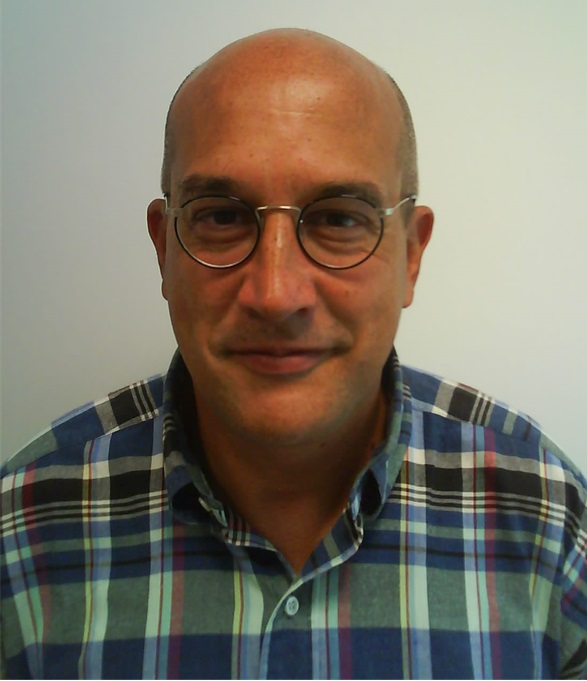

Keynote Speach and Tutorial
Keynote Speach
Chair: Shigeo Takahashi (University of Aizu)
Chair: Paolo Bottoni (Sapienza University of Rome)
 Designing Visual Interactivity for Data Experience and Engagement
Designing Visual Interactivity for Data Experience and EngagementProf. Kumiyo Nakakoji
(Kyoto University, Japan)
Abstract and Short bio
 Content-aware Color Constancy
Prof. Raimondo Schettini
(University of Milano-Bicocca, Italy)
Abstract and Short bio
Tutorial
Chair: Shigeo Takahashi (University of Aizu)
Visually Do Statistics for Business Persons: Visual Materials from Regression to Black-Sholes Model
Prof. Yukari Shirota (Gakushuin University, Japan)
Prof. Yutaka Takahasi (Senshu University, Japan)
Prof. Nobuhide Tanaka (Gakushuin University, Japan)
Prof. Michiya Morita (Gakushuin University, Japan)
Abstract and Contents
Program at a Glance
Time Table
| Day 1 Aug. 24 (Mon) |
Day 2 Aug. 25 (Tue) |
Day 3 Aug. 26 (Wed) |
|
|---|---|---|---|
| 09:00 | Registration (9:00-) |
Registration (9:00-) | Registration (9:00-) |
| Keynote speech 2 (9:30-10:30) |
Session 4 Visualization application 2 (9:30-11:30) |
||
| 10:00 | Tutorial (10:00-11:30) |
||
| Coffee break (30min) | |||
| 11:00 | Session 2 Visualization methodologies 1 (11:00-12:30) |
||
| Coffee break (20min) | Lunch (11:30-12:45) |
||
| Tutorial (11:50-13:00) |
|||
| 12:00 | |||
| Poster fast forward (15min) | |||
| Lunch (12:45-13:50) |
Session 5 Visualization methodologies 2 (12:45-14:15) |
||
| 13:00 | Lunch (13:00-14:15) |
||
| 14:00 | Interactive poster session & Coffee break (13:50-14:50) |
||
| Opening (14:15-14:30) |
Closing (14:15-) | ||
| Keynote speech 1 (14:30-15:30) |
|||
| 15:00 | Session 3 Visual design and art (15:00-16:45) |
||
| Coffee break (30min) | |||
| 16:00 | Session 1 Visualization application 1 (16:00-18:00) |
||
| Move to banquet place |
|||
| 17:00 | |||
| 18:00 | Reception (18:00-) |
||
| Banquet (18:30-) |
|||
| 19:00 |
Day 1 (August 24, Monday)
Session 1: Visualization application 1 (16:00-18:00)
Chair: Karsten Klein (Monash University)
-
Predictive Visual Analytics using Topic Composition [FULL]
Hanbyul Yeon, Sejong University, The Republic of Korea
Yun Jang, Sejong University, The Republic of Korea -
A Preliminary Study on Network-based ADL Training for the Visually Impaired by Use of a Parametric-speaker Robot [FULL]
Koji Kainou, University of Tsukuba, Japan
Hotaka Takizawa, University of Tsukuba, Japan
Mayumi Aoyagi, Aichi University of Education, Japan
Nobuo Ezaki, Toba National College of Maritime Technology, Japan
Shinji Mizuno, Aichi University of Education, Japan -
In-Situ Visualisation of Fractional Code Ownership over Time [FULL]
Christoph Muller, University of Stuttgart, Germany
Guido Reina, University of Stuttgart, Germany
Thomas Ertl, University of Stuttgart, Germany -
Remote Rendering and User Interaction on Mobile Devices for Scientific Visualization [FULL]
Michael Krone, University of Stuttgart, Germany
Christoph Muller, University of Stuttgart, Germany
Thomas Ertl, University of Stuttgart, Germany
Daniel Kauker, University of Stuttgart, Germany
Augusto Cravo Silva, University of Porto, Portugal
Diana Salsa, University of Stuttgart, Germany
Manuel Graber, University of Stuttgart, Germany
Manuela Kallert, University of Stuttgart, Germany
Back to symposium timetable
Day 2 (August 25, Tuesday)
Session 2: Visualization methodologies 1 (11:00-12:30)
Chair: Ken Wakita (Tokyo Institute of Technology)
-
Dynamic Graph Visualization with Multiple Visual Metaphors [FULL]
Michael Burch, University of Stuttgart, Germany -
Consistently GPU-Accelerated Graph Visualization [FULL]
Alexandros Panagiotidis, University of Stuttgart, Germany
Guido Reina, University of Stuttgart, Germany
Michael Burch, University of Stuttgart, Germany
Tilo Pfannkuch, University of Stuttgart, Germany
Thomas Ertl, University of Stuttgart, Germany -
The Graph Landscape -- a Concept for the Visual Analysis of Graph Set Properties [FULL]
Andrew Kennedy, The University of Sydney, Australia
Karsten Klein, Monash University, Australia
An Nguyen, The University of Sydney, Australia
Back to symposium timetable
Poster fast forward (12:30-12:45)
Chair: Masahito Hirakawa (Shimane University)
-
[P01] Visually Do Statistics: Visual Materials of Covariance in Regressive Analysis
Yukari Shirota, Gakushuin University, Japan
Yutaka Takahashi, Senshu University, Japan
Nobuhide Tanaka, Gakushuin University, Japan
Michiya Morita, Gakushuin University, Japan -
[P02] The Interface Design for Serendipity with Collective Intelligence
Makiko Harada, Tokyo Metropolitan University, Japan
Hidenori Watanave, Tokyo Metropolitan University, Japan -
[P03] Synchronizing Digital Signage Content with the Movement of Passerby
Nozomi Tamaki, Shimane University, Japan
Masahito Hirakawa, Shimane University, Japan -
[P04] Enabling Finger-Gesture Interaction with Kinect
Harrison Cook, University of Western Sydney, Australia
Quang Vinh Nguyen, University of Western Sydney, Australia
Simeon Simoff, University of Western Sydney, Australia -
[P05] Interactive Visualization of Quantitative Data with G2D3
Antoine Trouve, Kyushu University, Japan
Kazuaki J. Murakami, Kyushu University, Japan -
[P06] A Layout Technique for Storyline-based Visualization of Consecutive Numerical Time-varying Data
Sayaka Yagi, Ochanomizu University, Japan
Takayuki Itoh, Ochanomizu University, Japan
Masahiro Takatsuka, The University of Sydney, Australia -
[P07] Logo Trend Visualization: Logo Design Shape Element Trend and Pattern Analysis
Hyoji Ha, Ajou University, The Republic of Korea
Sungyun Bae, Ajou University, The Republic of Korea
Hyunwoo Han, Ajou University, The Republic of Korea
KyungWon Lee, Ajou University, The Republic of Korea -
[P08] Data Analysis Tool for Arm Movement Pattern in Virtual Catching Task: A Preliminary Development
Shinya Tachihara, Tokyo University of Science, Japan
Takehiko Yamaguchi, Tokyo University of Science, Japan
Naoki Ishiura, Tokyo University of Science, Japan
Mickael Dinomai, Centre les Capucins, France
Paul Richard, Universite Angers, France
Sylvie Nguyen, Centre les Capucins, France
Tetsuya Harada, Tokyo University of Science, Japan -
[P09] A Visual Approach for Detecting Drive-by Download Attack
Tetsuji Takada, The University of Electro-Communications, Japan
Amako Katsuhiro, The University of Electro-Communications, Japan -
[P10] A Projection-based Medical Augmented Reality System
Jiann-Der Lee, Chang Gung University, Taiwan
Hao-Che Lee, Chang Gung University, Taiwan
Chung-Hung Hsieh, Chang Gung University, Taiwan
Chieh-Tsai Wu, Chang Gung Memorial Hospital, Taiwan
Shin-Tseng Lee, Chang Gung Memorial Hospital, Taiwan -
[P11] Enhanced Visualization of News Shot Cloud with Employing Circular Layout
Norio Katayama, National Institute of Informatics, Japan
Hiroshi Mo, National Institute of Informatics, Japan
Shin'ichi Satoh, National Institute of Informatics, Japan -
[P12] Using Virtual Reality Technique to Enhance Experience of Exploring 3D Trajectory Visualizations
Meng-Jia Zhang, Tianjin University, China
Jie Li, Tianjin University, China
Kang Zhang, University of Texas at Dallas, USA
Back to symposium timetable
Session 3: Visual design and art (15:00-16:45)
Chair: Michael Burch (University of Stuttgart)
-
Digital Artwork Creation Using Water and Sand on a Two-Dimensional Surface [FULL]
Ting-Yu Chen, National Chiao Tung University, Taiwan
Sai-Keung Wong, National Chiao Tung University, Taiwan -
HistoryPaper: A Magazine-Style Layout of Representative Web Pages Extracted from Browsing History [FULL]
Chica Matsueda, Ochanomizu University, Japan
Takayuki Itoh, Ochanomizu University, Japan -
The Fantastic Voyage: An Arts-Led Approach to 3D Virtual Reality Visualization of Clinical Stroke Data [SHORT]
John McGhee, University of New South Wales, Australia
Angelica G. Thompson-Butel, St Vincent's Hospital, Australia
Steven Faux, St Vincent's Hospital, Australia
Pascal Bou-Haidar, St Vincent's Hospital, Australia
John Bailey, University of New South Wales, Australia -
Vision-Based Technique and Issues for Multimodal Interaction in Augmented Reality [SHORT]
Ajune Wanis Ismail, Universiti Teknologi Malaysia, Malaysia
Mark Billinghurst, University of Canterbury, New Zealand
Mohd Shahrizal Sunar, Universiti Teknologi Malaysia, Malaysia
Back to symposium timetable
Day 3 (August 26, Wednesday)
Session 4: Visualization application 2 (9:30-11:00)
Chair: Robert P. Biuk-Aghai (University of Macau)
-
Visual Cyber Situational Awareness for Critical Infrastructures [FULL]
Marco Angelini, University of Rome La Sapienza, Italy
Giuseppe Santucci, University of Rome La Sapienza, Italy -
An Interactive Radial Visualization of Geoscience Observation Data [FULL]
Jie Li, Tianjin University, China
Zhao-Peng Meng, Tianjin University, China
Mao-Lin Huang, Tianjin University, China and University of Technology, Australia
Kang Zhang, University of Texas at Dallas, USA -
An Interactive Exploratory Search System for On-Line Apparel Shopping [SHORT]
Eriko Koike, Ochanomizu University, Japan
Takayuki Itoh, Ochanomizu University, Japan -
Interactive Visual Analysis of Temporal Text Data [SHORT]
Aditeya Pandey, Tata Consultancy Services Research, India
Kunal Ranjan, Tata Consultancy Services Research, India
Geetika Sharma, Tata Consultancy Services Research, India
Lipika Dey Tata Consultancy Services Research, India -
Exploring the Benefits of Text and Sketch in Video Retrieval of Complex Queries [SHORT]
Yan Huang, Chinese Academy of Sciences, China
Cuixia Ma, Chinese Academy of Sciences, China
Hongan Wang, Chinese Academy of Sciences, China
Back to symposium timetable
Session 5: Visualization methodologies 2 (12:45-14:15)
Chair: Chun-Cheng Lin (National Chiao Tung University)
-
Metaphoric Transfer Effect in Information Visualization Using Glyphs [FULL]
Yina Li, Nankai University, China
Dong-Jin Li, Nankai University, China
Kang Zhang, University of Texas at Dallas, USA -
On the Utility of Large High-Resolution Displays for Comparative Scientific Visualisation [SHORT]
Christoph Muller, University of Stuttgart, Germany
Michael Krone, University of Stuttgart, Germany
Katrin Scharnowski, University of Stuttgart, Germany
Guido Reina, University of Stuttgart, Germany
Thomas Ertl, University of Stuttgart, Germany -
Enhanced Hexagon-Tiling Algorithm for Map-Like Information Visualisation [SHORT]
Muye Yang, University of Macau, Macao
Robert P. Biuk-Aghai, University of Macau, Macao -
On Clustered Graph Layouts Sketched by Users Based on Predefined Clusters [SHORT]
Chun-Cheng Lin, National Chiao Tung University, Taiwan
Weidong Huang, University of Tasmania, Australia
Wan-Yu Liu, Aletheia University, Taiwan
Shierly Tanizar, National Chiao Tung University, Taiwan
Back to symposium timetable